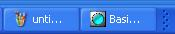
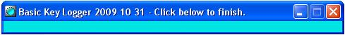

What
is Basic Key Logger ?
Basic Key Logger is a
standalone key logger that captures
keyboard and mouse inputs from any application running in parallel.
|
FEATURES
Temporal resolution: 10-15ms (depends on CPU and active services)
Events storage: in memory
during the recording (so that there is
no disk access), written to disk at the end.
Log files:
key
log: input events, e.g., key press, key release, mouse move.
KPC log: operations,
e.g., Key typing, Pointing movements,
Clicks.
Operations are more concise than
input events and they show clearly
what a user is doing.
Size of log files: key
log, typically 150k/minute; KPC log,
15-20k/minute (depends on what you are doing).
Format of log files:
TSV, i.e., tab-separated values. Can
be opened
in spreadsheets (Open Office, Excel(r) ) or in any text editor. |
Basic Key Logger is an evaluation tool for human-computer
interaction.
Basic Key Logger is suitable for
software development: you can test prototypes as well as final
applications without modifying your sources.
Example of analyses
From the
KPC log: number of operations per task, duration of operations, typing
rates, length of pointing movements, pauses...
From the
Key log: mouse trajectories, kinematics (velocity, acceleration, jerk
), density of mouse movements and mouse clicks in determined regions,
etc.
example of
processed logs (xls). Take a look at sheet#2 for basic statistics
and at sheet 3 for
a plot of the mouse movements.
Basic Key Logger is also a tool to build KPC models. A KPC
model predicts the average execution time of a task from the
number of operations of an expert user.
What
is NOT Basic Key Logger?
Basic Key Logger is
not a spyware
(yeark!).
In normal mode, there is a blue led on
the task bar
when Basic Key Logger is recording. In hidden mode, the program is
visible in the Task Manager (hidden mode is available from release 2011
03 01).
There are no hidden files or data
transmissions (easy to check: it is open source).
Basic Key Logger is
not a backup
system. You cannot play back the logs.
Project
history
In march 2007, we needed a key logger for an experiment with commercial
software. We needed to record
KPC
logs, i.e. sequences of Key presses, Pointing
movements and button Clicks.
KPC was initially developed by
Pierre-Samuel
Dubé and Eric Fimbel (2005-2006)
at the LESIA laboratory, Ecole de technologie supérieure,
Montréal..
Most of the keyloggers we found on the web were spyware (
spy-your-children spy-your-spouse, hack-web-users, etc. ) Yeark. Plus,
none of the freeware we tested produced what we needed.
Thus we developed Basic Key Logger.
Hardware
and software requirements
Windows XP and further, 25 Mb free disk space.
No additional requirement. Basic Lab Book is written in Python
but it contains its own copy, i.e., it is
standalone.
Installation
and uninstallation
Installation. Download the zip
file and unzip it in any folder.
Uninstallation. Delete the
installation folder.
Getting started
Go to the installation directory and execute
startKeyLogger.exe. There is now a
blue led in the task bar that indicates recording

If you want to hide the icon, execute startHidden.exe
instead of startKeyLogger.exe
Do whatever you want (click click key key mouse move click click....)
To stop recording, click on the task bar icon (the led). The following
window appears.

In
versions 2009 12 31 and following, the window displays the path to
the root directory of Basic Key Logger
If the icon is not visible, execute stopKeyLogger.exe.
Click in the blue panel. The window disappears and the log are
generated in subfolder
data/
Open the logs with a spreadsheet (Open
Office or Excel(r)). The format is tab-delimited.
Plumbing (content of
the folder)
root
|
commands
startKeyLogger.exe,
stopKeyLogger.exe...
|
|
configuration
|
configuration:
file
keylogger_configuration.py
|
|
data
|
log files
|
|
documentation
|
this document
|
|
library
|
software (in Python). loader of
standalone library is in __init__.py
|
|
keylog
|
this program. KeyLogger.py(main
class), configuration files .py, scripts startKeyLogger.pyw ..., icons
*.png (Icons from www.mouserunner.net)
|
|
guiPygame
|
graphical interface in Pygame.
StateWindow.py (finite states window), configuration files .py.
|
|
api
|
utilities
|
|
python
|
standalone installation of
python 2.4 (from www.python.org).
Unused files deleted, external files replaced here (e.g., python24.dll)
|
|
...Lib/site-packages
|
additional libraries
|
|
pygame
|
graphical interface (from www.pygame.org)
|
|
pyhook
|
captures events in Windows'
thread (from sourceforge.net/projects/pyhook/) |
|
pywin32
|
extensions of Python for Windows
(from sourceforge.net/projects/pywin32/.
)
|
|
ctypes
|
C wrapper for Python, Part of
python 5 (from sourceforge.net/projects/ctypes) |
Commands
(control key logger from outside)
The commands are executable files in the root directory.
Start Basic Key Logger (command
startKeyLogger.exe). An icon will
appear in the task bar. Click to view the window of
Basic Key Logger
Figure 1. Icon and window of basic Key
Logger
Note.
startKeyLogger accepts configuration parameters on the command line
(see below)
Start Basic Key Logger without
icon (command
startHidden.exe).
There is no icon in the task bar. However, Basic Key Logger is visible
in the Task Manager.
only
from release 2011 03 01.
Stop Basic Key Logger. (command
stopKeyLogger.exe). The logs
are written in the
data/
folder (this can be
redirected, see Section Configuration). If there was an icon, it
disappears.
Alternative.
when there is an icon in the task bar, open the window and click in the
panel to stop
recording.
Suspend and resume recording.
(commands
suspendKeyLogger.exe and
resumeKeyLogger.exe).
Note.
When suspended, the icon becomes grey. Basic Key Logger does not
record until resume is
executed.
Insert markers in the log files
(commands
startSession.exe,
startBlock.exe, startTrial.exe and
stopSession.exe, stopBlock.exe,
stopTrial.exe). These commands insert special lines in the logs.
They are aimed at test protocols
composed of one or several sessions, where blocks of trials (elementary
tasks) are executed. These tags simplify data processing.
Generate additional KPC logs
(command
kpcLog.exe).
Change the configuration file, then run this command to generate a new
KPC log from the last key log.
This allows obtaining KPC logs with
different parameters from the same recording (see parameters in Section
Configuration).
Warning. kpcLog.exe overwrites the current data/kpc_log.tsv.
Warning 2. There is no feedback. Look at the date of data/kpc_log.tsv to check that this
is a new log.
Controlling Basic Key Logger from a Python
application. Start Basic Key Logger and execute the commands
from your application.
To
start Basic Key Logger execute the
command from your application. For instance in Python use instruction
os.system( "startkeyLogger.exe" ).
Then, you can pause or resume recording and/or set markers for session,
block, trials, synchronizations in 3 ways:
the
slow way: execute the commands.
For instance in Python, use instruction os.system( "stopKeyLogger.exe" ).
However, this introduces a lag.
the
fast way : generate a
key press event with a special key. For instance in
Python, use the instruction win32api.keybd_event(
233, 0 ) .
To stop Basic Key Logger, execute the
command stopKeyLogger.exe from
your application. For instance in Python os.system( "stopkeyLogger.exe" ).
Table 1. Command keys to control Basic
Key Logger
Command
|
Value
of the key
|
Start session
|
232
|
Stop session
|
233
|
Start block
|
234
|
Stop block
|
235
|
Start trial
|
236
|
Stop trial
|
237
|
Suspend logger
|
238
|
Resume logger
|
239
|
| Stop Basic Key Logger |
240
|
Synchronization key
(additional tag)
|
241
|
Synchronization key 1
(additional tag)
|
242
|
Synchronization key 2
(additional tag)
|
243
|
|
|
Internally generated - have no
effect if you generate them. Versions 2010 03 31 and further
|
|
Start time of disk write
|
244
|
End time of disk write
|
245
|
Command line
(overriding configuration parameters)
In versions 2010 03 31 and further
The command startKeyLogger.exe accepts arguments to override the
configuration files (see Section Configuration below). The command line
can be of the form
startKeyLogger
argument1=value1 argument2=value2...
also accepted: argumentX = valueX
(with space) or simple argumentX
valueX
The arguments must be parameters as defined in the configuration files,
and the values must be of the correct type : boolean, integer, float or
string. For instance:
startKeyLogger
writePeriodS=120 writeMode=append
Warning.
the arguments are case-sensitive
Here are examples of
invalid
command lines
startKeyLogger
toto=12 (undefined argument)
startKeyLogger writeperiods=12 (case sensitive)
startKeyLogger writePeriodS=120
writeMode (unbalanced command line)
Key
logs
Where are Key Logs ?
The Key log is in
data/log_key.tsv.
This path can be changed in the configuration file (see Section
Configuration).
By default, key logs are
appended
to this file. This can also be changed in the configuration file.
Events
Key logs contain the following
events
- key press or release
- mouse move
- mouse wheel
- mouse button press and release
- start* and stop* , injected events that indicate start and stop
of test sessions, blocks trials.
Each event corresponds to
one line of
the log file. The first word is the type of event:
mouseLeftDown, mouseLeftUp : left mouse button
mouseMiddleDown, mouseMiddleUp: middle mouse button
mouseRightDown, mouseRightUp: right mouse button
mouseMove : mouse displacement
mouseWheel : scroll of mouse wheel.
note. The first word can also be a tag
injected by an external command (see above).
The log file is in
TSV format
( tab-separated
values), i.e., each field of a line is separated by a tab. CSV files
can be opened with text editors and spreadsheets.
Note.
you can change the field delimiter to comma, but this may be a problem
with Excel(r) (Excel ' understands' as comma the regional
delimiter, ';' or ',').
If you
open a key log file with a text editor, you will see something like
this (note that tabs are not always aligned)
mouseMove
window FolderView widget 262544
date 2007
03 12 - 08:32:02 timeStampMs 0
injected 0 xPix 135
yPix 348 wheel 0
mouseRightDown window FolderView
widget 262544 date 2007 03 12 -
08:32:07 timeStampMs 5148
injected 0 xPix 283
yPix 603 wheel 0
mouseRightUp window FolderView
widget 262544 date 2007 03 12 -
08:32:07 timeStampMs 5388
injected 0 xPix 283
yPix 603 wheel 0
|
Fields
Comments. Comment lines start
with #.
Event lines contain the type of
event, followed by pairs attribute, value separated by tabs
The beginning of the line is common to all the types of events:
event
type: a string.
keyDown, keyUp,
mouse(Button)Down (Button = Left Center or Right), mouse(Button)Up,
mouseMove, mouseWheel,
start(Activity) (Activity = Session, Block. Trial), stop(Activity),
stopLogger, suspendLogger, resumeLogger
window : the name of the window
in which the event generates.
widget : the numerical Id of
the widget in which the event generate ( coded by Windows )
date : the data and time of
event in format yyyy mm dd - hh:MM:SS
timeStampS : the time at which
the event occurred counted in seconds (floating point). By default,
starts on 1/1/1970. Can be configured to start at the beginning of the
recording session (see Section Configuration).
injected: 0 for events produced
by the devices ( mouse or keyboard ), any positive number for events
created by software ( e.g., for the events start* and stop*. injected
is 16.
The remainder of the line is event specific
keyDown, keyUp events
key
: the name of the key. Uppercase letter or identifier, e.g., Lshift.
ascii : ascii code, or 0 when
the key produces no ascii code.
scanCode : code of the physical
key that have been touched (refers to the physical layout of keys)
keyId : identifier of the key (
numerical )
extended : 0 if the key comes
from the main keyboard, positive integer otherwise (e.g., numerical pad)
alt : 0 if alt key is not
currently pressed, positive integer otherwise
mouse(Button)Down, mouse(Button)Up,
mouseMove, mouseWheel
xPix
: horizontal position of pointer in pixels ( 0 = left )
yPix : vertical position of
pointer in pixels ( 0 = top ; has to be inverted for plots, e.g.,
768-yPix)
wheel : current movement of the
wheel: 0 for all events, -1 +1 for mouseWheel events.
start(Activity), stop(Activity)
session
: session number incremented at each startSession event. "0"
means that no startSession occurred before.
block : block number
incremented at each startBlock event, and resetted at each startSession
event.. "0: means that no startBlock occurred in the current session.
trial :
trial number incremented at each startTrial event, and resetted at each
startBlock and startSession events. "0" means that no startTrial
occurred in the current block.
write : start and stop of write
operations. Useful when logs are written periodically (during the
writing, the operations are lagged) (versions 2010 03 31 and further)
startLogger, suspendLogger,
resumeLogger
void.
.
KPC
logs
Where are KPC Logs ?
The KPC log is in
data/log_kpc.tsv.
This path can be changed in the configuration file (see Section
Configuration).
By default, key logs are
appended
to this file. This can also be changed in the configuration file.
Unless you decide otherwise a KPC log is generated conjointly with the
Key log as soon as the log stops, i.e., by the command
stopKeyLogger.pyw or by clicking the window of Basic Key Logger.
However, it may be of interest changing some parameters like the
minimal duration to detect pauses (see below), and generate different
KPC logs. This is done by the command kpcLog.pyw.
Operations
KPC logs contains
operations,
i.e., interaction from a user's viewpoint (whereas events are from the
computer's viewpoint) :
- P = point at a position x,y,
- C = click a mouse button
- K = enter key or press function key
- A = automatic key, e.g., auto repeat
- W = rolls mouse wheel
You also find in KPC logs:
- Q = quiet period, mouse and keyboard are idle ( equivalent to
pauses, or M operations in KLM models )
- the same tags than in key logs (startSession, stopSession, etc.),
Each operation corresponds to
one
line of the log file. The first word is the type of event
(P, X, K, A, W, Q) or it is a tag.
Like Key logs, KPC logs are in
TSV
format. If you open a KPC log file with a text editor,
you will
see
something like this.
P
window FolderView widget
262544 date 2007
03 12 - 08:32:02 timeStampS 0. durationS
2.013 overlapS 1.562
xPix 135 yPix 348 ..
Q window
FolderView
widget 3212198 date 2007
03 12 - 08:32:04 timeStampS .451
durationS 1.703 overlapS 1.41
K window
FolderView
widget 3212198 date 2007
03 12 - 08:32:04 timeStampS 2.013
durationS 0.331 overlapS 0.
key l
K window
FolderView
widget 3212198 date 2007
03 12 - 08:32:04 timeStampS 2.344
durationS 0.1322 overlapS
1.172 key l
|
The operations are composed of multiple events, e.g., a Pointing
movement is a sequence of mouse move events. See next section for
details.
The quiet periods
are not events.
They indicate a pause in the interface entry that can occur between
and/or during operations, e.g., during a pointing movement or between
key presses.
Note.
A pause does not mean that the user does nothing or that he/she is
thinking. It only indicates that there are no entries.
it is worth underlining that
the KPC
logs are not fully sequential. Consecutive operations can
overlap.
For instance you move the mouse with
one hand and you write with the other: you do not stop moving the mouse
at each key press.
The KPC logs contain the operations in order of increasing start time.
When operations do not overlap, the end time of operation n is the
start time of operation n+1. When operations overlap, the operation n
ends after operation n+1 started.
Conversion from Key logs to KPC
logs
The following rules are used to generate KPC operations from sequences
of events.
Table 2. Rules of conversion
events-operations
operation
|
description
|
rules
of start and stop
|
A
|
automatic key press
(keyboard auto-repeat) |
start: event key X down when X was
already pressed.
stop: next
event key X up or key X down |
C
|
mouse button click
|
start: event button X down
stop: next
event button X up |
K
|
key press
|
start: event key X down when X was not already pressed.
stop: next event key X up. |
P
|
pointing
|
start:
event mouse move
event
when there is not a P operation already started.
stop: next event mouse move that verifies:
1)
the previous mouse move
occurred
more than 100ms before (duration is adjustable) AND
2) there is an intermediary event (different from mouse move) after the
previous move move.
comment. A P stops when
there is a pause in mouse movement and something occurs during this
pause. |
Q
|
quiet period
|
start: the
previous event occurred more than 1s ago (duration is adjustable).
stop: next event. |
W
|
scroll of mouse wheel. |
start:
event mouse wheel when
there is not a W operation already started.
stop: next event mouse wheel that verifies:
1)
the previous mouse wheel occurred
more than 100ms before (duration is adjustable) AND
2) there is an intermediary event (different from mouse wheel) after the
previous mouse wheel.
comment. A W stops when
there is a pause in mouse wheel scrolling and something occurs during
this pause |
operation is inserted
when the difference between the time Tn of current event En and time
Tn-1 of event En-1 is above
pauseThresholdS
(default 1s).
The start time is Tn-1 + sampling
period (10ms).
The end time is
the time Tn+1 of next event, En+1
Note that a Q event may end before the
start time of the next operation
of the KPC log (because some key events do not start operations)
K (type key of keyboard )
K operation is inserted
when there is a key press event that corresponds to a key that was not
already pressed.
The start time of a K event is the time
Tn of event En of the key
press. The end time it the start time of the next operation in the KPC
log.
A combination shift+a
corresponds to 2
K operations. Among the attributes of a K operation, we have the key
that has been typed ( see next section for details ).
Note. When the parameter
keyRelease is set to 1, K operations are also generated when a key is
released.
A ( automatic key )
A operation is inserted when
there is a key press event that corresponds to a key that 1) is already
pressed, 2) is not a special key, CONTROL, SHIFT or ALT.
The corresponding key, the start time
and the endtime are determined
like for K events.
C (click mouse button )
C operation is inserted when
there is a mouse pressed event. Among the attributes of a C operation,
there is the mouse button that has been used ( see next section for
details).
The start time is the time Tn of event
En of the button press.
The end
time it the start time of the next operation in the KPC log.
Note. When the parameter
buttonRelease is set to 1, C operations are also generated when a
button is released.
P ( pointing )
P operation is inserted when
ther is a mouse move event and there is no P operation in execution
(see below). Among the attributes of a P operation, there are the
initial and final position, the distance and the length of the
trajectory of the mouse ( see next section for details ).
The start time of the P operation is:
the time Tn of the mouse move
event.
The end time is the start time of
the operation in the KPC
log that follows the end of
the pointing.
Note that there may be several operations during the
pointing, e.g., pressing Keys while moving the mouse..
Comment. A P operation
ends when the delay between two mouse move events
is larger than a
continuity threshold
(100 ms) and when a different event occurs meanwhile, e.g.,
"mouse
move
mouse move" is OK ( a Q period occurs, but the P operation follows)
< 10 seconds ... >
"mouse move click mouse
move" is OK ( a C operation occurs, but the P operation follows)
< 50 ms >
"mouse move
Click mouse move" is not OK:
the P operation ends.
< 200 ms >
W ( scrolling mouse wheel )
W operation is inserted when
there is: a mouse wheel event and there is no Wheel operation in
execution (see below). Among the attributes of a W operation, there are
the distance that has been scrolled ( sum of the wheel movements
upwards
+1 or downwards -1) and the total number of wheel movements ( may be
higher than distance, if user went back and forth). See next
section for details.
The start time is: the time Tn of the
mouse wheel event.
The end time
is the start time of theoperation in the KPC log that follows the end of the Wheel
rolling.
Note that there may be several operations during the wheel
rolling, e.g., pressing Keys while using the wheel.
Comment. A W operation ends:
when the delay between two mouse wheel events is
larger than a continuity threshold (100 ms)
and when a different event occurs meanwhile, e.g.,
"mouse
wheel
mouse wheel" is OK ( a Q period occurs, but the W operation follows)
< 10 seconds ... >
"mouse wheel mouse move mouse
wheel" is OK ( a P operation starts, but the W operation follows)
< 50 ms >
"mouse wheel
Click mouse wheel" is not OK: the W operation
ends.
< 200 ms >
Duration and overlap
The
duration of an operation
is the difference end time - start time ( in fact, the duration is
stored but not the end time. We only used the end time for simplifity
in the foregoing explanations)
The
overlap of operation X is
the sum of the time intervals in which some other operation occurs.
There is a simple relation between overlap and duration:
| total
time = sum( durations of all events ) - sum ( overlaps of all events ). |
Fields of the operations and lines
format
Comment lines start with #.
Operation lines contain the
type of operation, followed by pairs attribute, value separated by
commas.
The beginning of the line is common to all the types of operations:
type
of operation: a string
K ( type a key of keyboard )
A ( key that is automatically generated, e.g., autorepeat )
P ( point )
C ( click a mouse button )
W ( rolls the mouse wheel )
Q ( quiet period )
start(Activity) (Activity = Session, Block. Trial), stop(Activity),
stopLogger, suspendLogger, resumeLogger
window : the name of the
window in which the event generates
widget : the numerical Id of
the widget in which the event generate ( coded by Windows )
date : the data and time of
event in format yyyy mm dd - hh:MM:SS
timeStampS: the time at which
the event occurred counted in seconds (float) since 1/1/1970 (or
since the beginning of the
execution if configured so)
of the logger.
Note. Use the timeStampMs to find out
the corresponding event(s) in the key log.
durationS : duration in seconds
(float)
overlapS : total duration of
overlapping events in seconds (float)
Note. sum ( durationS ) - sum(
overlapS ) = total duration.
The remainder of the line is specific of each type of operation
K ( type Key )
key
: the description of the key.
If the key is visible (e.g., it
writes something when you use it in a text editor ), the key is the
corresponding character, e.g. "A", "b"... In this case the key
log contains a non-null ASCII code, and the key is the corresponding
character.
For invisible keys ( arrows, tabs, etc. ), the key is a string, e.g.,
"Lshift".
In addition, the key may have a prefix. The prefix "Alt+" is added if
some ALT key is currently pressed, and "Ctrl+" is added if some CONTROL
key is currently pressed, e.g., "Alt+A", "Alt+Ctrl+Tab".
The prefix "Shift+" is added only if the key is not a letter ( and some
SHIFT key is currently pressed). For instance, "Shift+1", but not
"Shift+a". (you will have "A" instead ).
releaseAfterS : the duration
of the key press in seconds. This field is generated only for the
K operations that correspond to key releases, when parameter keyRelease
is set to 1.
C ( mouse button click )
xPix :
horizontal position of pointer in pixels ( 0 = left )
yPix : vertical position of
pointer in pixels ( 0 = top ; has to be inverted for plots, e.g.,
768-yPix)
button : "left", "center" or
"right"
releaseAfterS : the duration
of the button press in seconds. This field is generated only for
the C operations that correspond to button releases, when parameter
buttonRelease
is set to 1.
P ( pointing )
xPix
: initial horizontal position of pointer in pixels
yPix : initial ertical
position of pointer in pixels
xFinalPix : final horizontal
position of pointer in pixels
yFinalPix : final vertical
position of pointer in pixels
distancePix : distance ( in
straight line ) between initial and final positions
lengthPix : length of the path
followed by mouse in pixels.
W ( roll mouse wheel )
xPix
: initial horizontal position of pointer in pixels
yPix : initial ertical position
of pointer in pixels
movement : resulting movement
of the wheel. Integer = sum of elementary wheel movements, +1 or -1
number : number of wheel events
( greater than movement if user rolled up and down )
Q ( quiet period )
void.
start(Activity), stop(Activity) :
session
: session number incremented at each startSession event. "0"
means that no startSession occurred before.
block : block number
incremented at each startBlock event, and resetted at each startSession
event.. "0: means that no startBlock occurred in the current session.
trial : trial number
incremented at each startTrial event, and resetted at each startBlock
and startSession events. "0" means that no startTrial occurred in the
current block.
Configuration
The configuration is in
configuration/keylogger_configuration.py.
This is a Python file. It contains comments (
# xyz ) and
assignations of parameters (
parameter
= value). When an assignation is commented
(
# parameter = value), the
default value of the parameter is taken. The parameters are:
absoluteFlag
1 if time is counted from 1/1/1970, 0 if time is counted from
the start of the recording session.
dayStartS : for
clock-controlled logging. Start time of daily recording in seconds
counted from 0:00. Deactivated if < 0. In versions 2010 03 31 and
further.
Warning.
logger shouild be already running at the time of start.
dayStopS : for clock-controlled
logging. Stop time of daily recording in
seconds counted from 0:00. Deactivated if < 0. In versions 2010 03
31 and further.
# bufferSize : size of
buffer used to write log files by blocks, in bytes (recommended to keep
default value)
buttonReleaseFlag : when set to
1,
a C operation is generated when a button is released, and the duration
of the press is indicated. When set to 0, C operations are generated
only for button presses ( default = 0 )
continuityThresholdS : maximal
delay between consecutive events of same type ( e.g. mouse wheel) to
consider them continuous (default 100 ms)
fieldDelimiter : tab, comma etc.
keyReleaseFlag
: when set to 1, a K operation is generated when a key is
released,
and the duration of the press is indicated. When set to 0, K operations
are generated only for key presses ( default = 0 )
# keyStopLogger,
keySynchronization, keySynchronization1, keySynchronization2,
keyStartSession, keyStopSession, keyStartBlock, keyStopBlock,
keyStartTrial, keyStopTrial, keySuspendLogger, keyResumeLogger :
special "keys" used to tag the log (recommended to keep these values).
kpcPath: path to KPC log(s)
file.
Default is logKpc.csv in the directory of Basic Key Logger.
logPath
: path of Key log(s) file. Default is logKey.csv in the directory of
Basic Key Logger.
mode : write mode : append or
write ( default = append ). Write means that the log file is rewritten
at each execution. Previous logs are lost.
pauseThresholdS : minimal
duration to detect a quiet period in seconds ( default 1. )
# samplingPeriodS : sampling
period in seconds (default 0.010 ). Recommended to keep this value.
writeMode : "append" (recording
is appended to the existing log file ) or "write" ( a new log file is
created for the recording)
writePeriodS : to write logs
periodically to disk. Period in seconds. Deactivated if the value is
<= 0 (default). (versions 2010 03 31 and further)
If there is an error in your
configuration file...
DON'T
PANIC. Basic Key Logger will still work
most of the time, and you can easily restore a correct configuration
file.
If you cannot fix the error, copy this
file in configuration/
Program documentation
If you need to dig in the program,
generate
the documentation with the script buildDocumentation.exe.
The documention covers the application and the local copy of python. It
is composed of 4 (large) html files:
readme (collects all readme information
in directories)
internal (the content of subfolder library/ : application and the local
copy of python)
buildin ( hard-coded in python)
external (the files defined in other subfolders, e.g., configuration/)
and eventually, the external dependencies (this occurs only if some
cases, when you have a preinstalled python that matches the
installation used for development)
Troubleshooting
1 -
The icon does not appear in the
task bar. This occurs when Pygame (and the library SDL ) cannot
get access to the monitor, e.g., some application put the monitor in
full screen mode. Basic Key Logger is running in background.
Verification: Task Manager, process,
there is a Python or Pythonw process running.
Solution : execute stopKeyLogger.exe.
If the Python process is still running, abort it from Task Manager.
2 -
The mouse slows down
AND/OR there are warnings about
low
virtual memory. Basic Key Logger has been running for a long
time and uses too much memory.
Verification : Task Manager, check
memory use.
Solution : execute stopKeyLogger.exe.
3
Basic Key Logger refuses to stop.
Solution : task manager, processes,
cancel Python processes.
4 The logs are not updated on disk.
There may be an access conflict, e.g., the
previous log files are edited in Excel (exclusive access)
Verification : try to move or delete
the previous log under the window explorer
Solution : close any program using the
log files
Version information
Release 2011-03-01
Extensions
Hidden mode, no icon in task bar (command
startHidden.exe)
Modifications
Error messages and warnings at
launching the program do not require a click, they disappear
automatically after 3 seconds.
Bugs
Creation of work directories failed when intermediate subdirectories
did not exist.
Release 2010-04-10
Extensions
command line arguments.
periodic writing of logs (tagged in log with keys startWrite/stopWrite)
daily timer (dayStartS dayStopS)
Bugs
precision of time stamps in absolute format : had only 2 decimals (now,
all time fields have 3 decimals)
access conflict : freeze when log files are edited in spreadsheet at
time of write (now, Basic Key Logger ends without writing in case of
conflict).
Release 2009-12-31
Extensions
Windows displays a path to the logs.
Bugs:
Was freezing for some combinations of button clicks.
Release 2009-10-31
Extensions
Standalone.
Field delimiter is configurable (tab or
comma)
Times and durations in seconds (floats)
Configuration file in Python. Access to
additional parameters.
Default log names and paths changed.
Control of multiple processes: only one copy of Basic Key Logger can
run at a time.
Window changed (uses Pygame instead of
Tkinter, uses leds to indicate the status)
Release 2007-05-22
Extensions
Parameter
: absoluteTimeStamp ( default = 0 ). Time stamp is absolute (
the time stamp of Windows, in milliseconds ) or relative ( starts at 0
at the beginning of the execution of startKetLogger).
Parameter buttonRelease (
default = 0 ). Operations "C" are generated when the buttons are
released. The difference between button press and button release is an
additional field for the C corresponding to a release: releaseAfterS
gives the duration of the button press.
Parameter keyRelease ( default
= 0 ). Operations "K" are generated
when the keyboard keys are released. The difference between key press
and key release is an additional field for the K corresponding to a
release: releaseAfterS gives the duration of the key press.
Bugs
fixed
Special
characters in windows'
names.
The generation of the KPC log
blocks when window names contain end-of-line, e.g.,
"circular reference blah blah blah". Fixed as follows. The end of lines
and "#" are replaced by spaces in
the logs ).
Extended ASCII codes.
The generation of the KPC log
blocks when a key press generates an extended ASCII code. Fixed as
follows: for ASCIIs above 256, the character is not displayed, only the
identifier ( e.g. num2).
Pointings and Wheel rollings.
Now move mouse, button release , move mouse generates a P P sequence.
Before, it only generated one P ( because button release is not seen ).
In the new version, a pointing P ends when 1) there is an event
different from mouse move, and 2) the last mouse move occurred more
than 100 ms ago ( or whatever the continuity threshold ). Idem for
Wheel rollings W and mouseWheel events.
Session, block and trial numbers.
The start and stop events and operations did not give indication about
the sequence of sessions, blocks and trials. In the new release, the
session, block and trial numbers are given for each start/stop.
Configuration file. Some
arguments of the configuration file were not read.